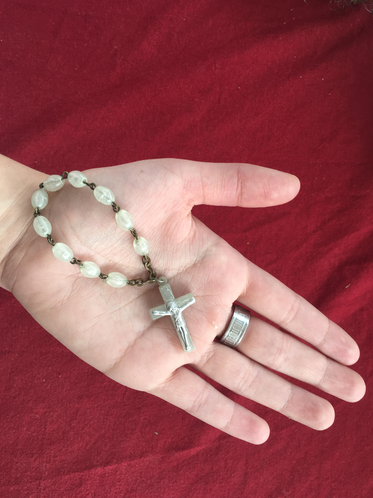

HOMOSEKSUALNOST V SODOBNEM KATOLIŠKEM SVETU
Kljub vsem prizadevanjem in drugačnim interpretacijam je homoseksualnost v sodobnem in uradnem katoliškem svetu še vedno označena kot greh,
zlasti v relaciji do družine. Prvi Evropski ortodoksni katoliški forum na temo družine, ki se je odvijal med 11. in 14. decembrom leta 2008
v mestu Trent, je homoseksualna razmerja označil kot odklon od človekove narave in zato kot povsem nesprejemljiva. V kategorijo odklonilnih
in prepovedanih dejanj je uvrstil vse oblike homoseksualnega občevanja, varanje in nezvestobo, prav tako pa tudi prostitucijo in promiskuiteto.
Poleg tega se je pojavila tudi težnja po pastoralni pomoči ljudem, ki imajo odklonilna nagnjenja in so zašli s teološko sprejemljive poti življenja.
Forum je rešitev sodobnega sveta videl v obujanju in okrepitvi heteroseksualne družine. V zaključku vpogleda v sodoben krščanski odnos do homoseksualnosti
je potrebno dodati še en element, in sicer to, da se v sodobnosti vedno več del dotika samih spolnih dejanj, torej seksa. Čeprav Biblija ne piše veliko o
tej temi, se v sodobnosti po mnenju Michela Foucaulta pojavlja govor, v katerem se povezujejo seks, odkritje resnice, preobrat
zakona sveta, napoved nekega drugačnega dne in obljuba določene blaženosti. O samem seksu se vedno več govori, se ga skuša obvladati in nadzorovati, kar zopet
vodi v njegovo zatiranje. 